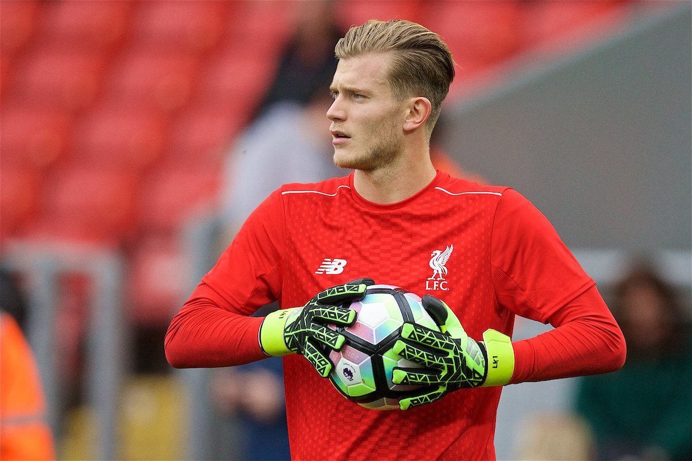
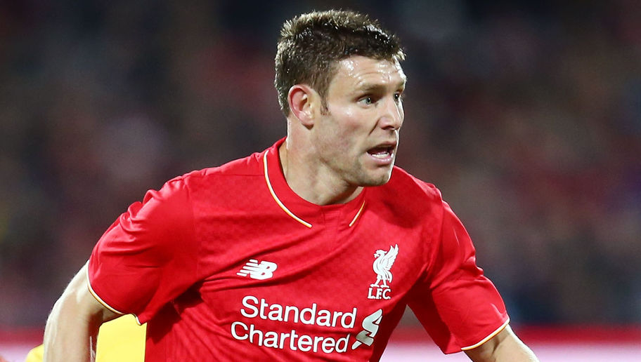

THE LIVERPOOL WAY
THE LIVERPOOL WAY
All about the world's best football club: LIVERPOOL FC!
Made by Liverpool Fans, For Liverpool Fans.
About the Club
Liverpool FC are a word class British football club that play in the Premier League. They are based in Merseyside, England. They are nicknamed 'The Reds'. Liverpool's anthem is 'You'll Never Walk Alone'. This song is always sung by the proud supporters at most Liverpool games.
A few of the Liverpool players:
Goalkeeper: Loris Karius
Loris Karius has been recently signed by Manager Jurgen Klopp and has said to be the first choice goalkeeper for Liverpool.

Left Back: James Milner
James Milner plays as a left back for Liverpool and is a well known player who has once even been the captain for Liverpool.

Left Center Back: Joel Matip
The Cameroon Center back that has recently been signed from the German club: Shalke 04 has performed really well this season.